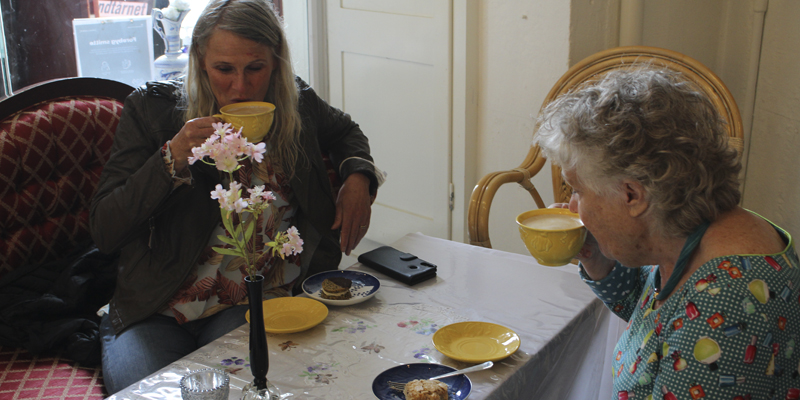
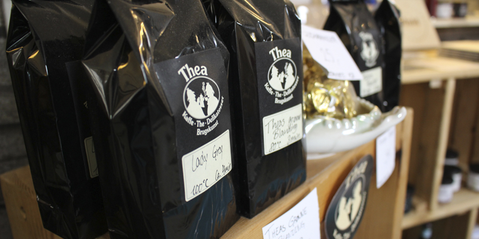
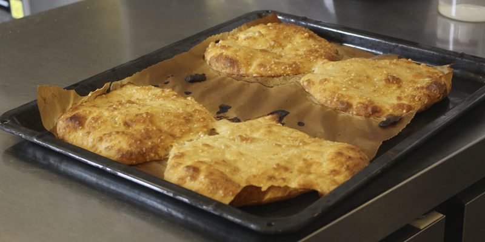

Hvad er Kaffetår´N?
Min kaffe

Kaffe har stor betydning for mig. Selve det at tage en kop kaffe med en anden person er at dele tid. Tid er jo vigtigt. Mine kaffer er økologiske
og er maskine-kværnet (stadig med kærlighed). I min café fås kun den bedste, økologiske og lokale kaffe. Og så kan det godt være, at den er maskine kværnet, og ikke
kværnet i hånden, men det gør den ikke mindre god, det lover jeg!
Oplevelser

Hos mig er der plads til alle, store som små. Jeg vil gerne garantere, at du vil synes om det hyggelige miljø. Så tag din mor med, din veninde, din søster, eller kom alene og få en sludder for en sladdder!
jeg bidder ikke, men leverer derimod godt selskab!
Min café er en unik oplevelse i sig selv, da de fleste ting er genbrugsvarer, hvilket er med til at give en stemning af hygge og sikkerhed.
Bagværk

Trods, at det kan være tidskrævende, at stå tidligt op og bage mit eget brød, så æner jeg at gøre det alligevel. Kvaliteten er ikke noget jeg går på kompromis med, og da
jeg bager et afsindigt godt brød, så går det jo op i en højere enhed. Alle caféens råvarer er hentet ind hos de lokale, og dét er lækkert!
Alle mine sandwiches er lavet med hjemmelavet brød, og økologiske lokale råvarer og en hel masse kærlighed.
Jeg bager også hjemmelavet kager til allergikere, jeg bager laktosefrie og glutenfrie kager. Kaffen kan også laves til behov.